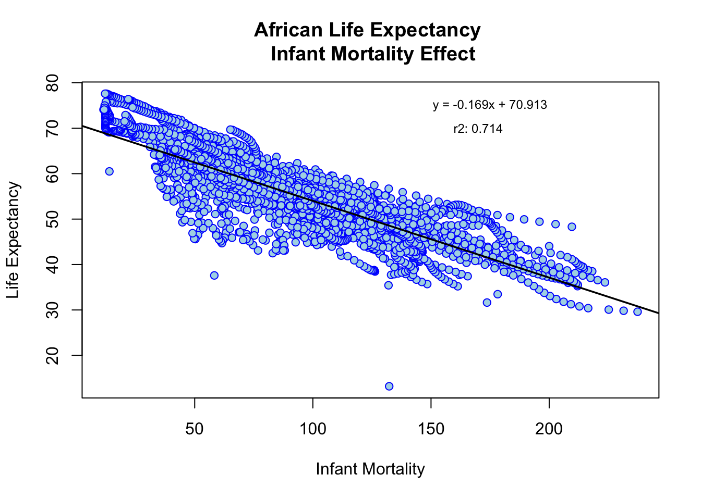
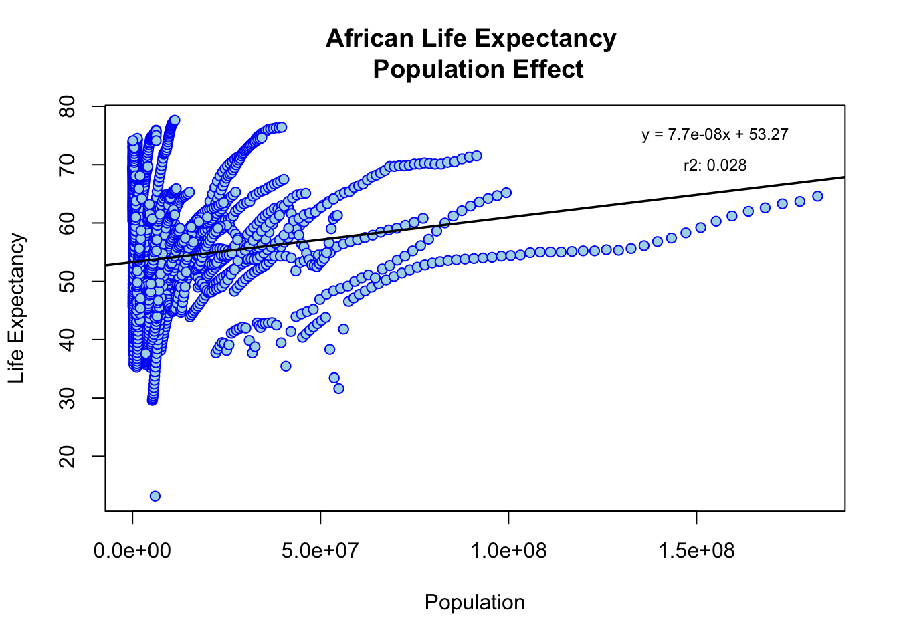
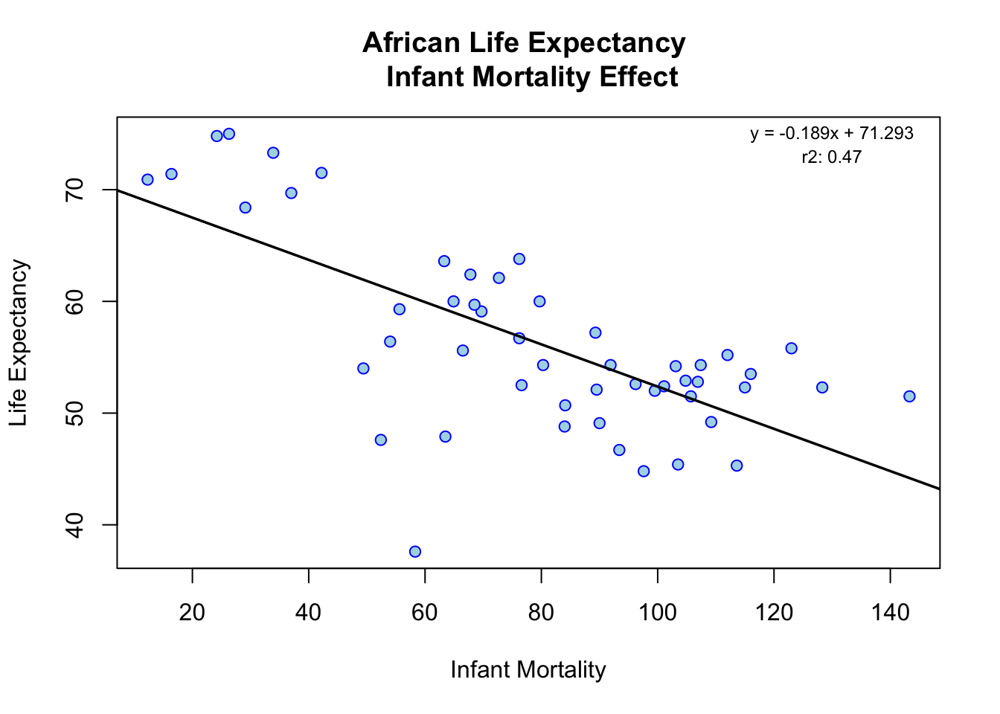
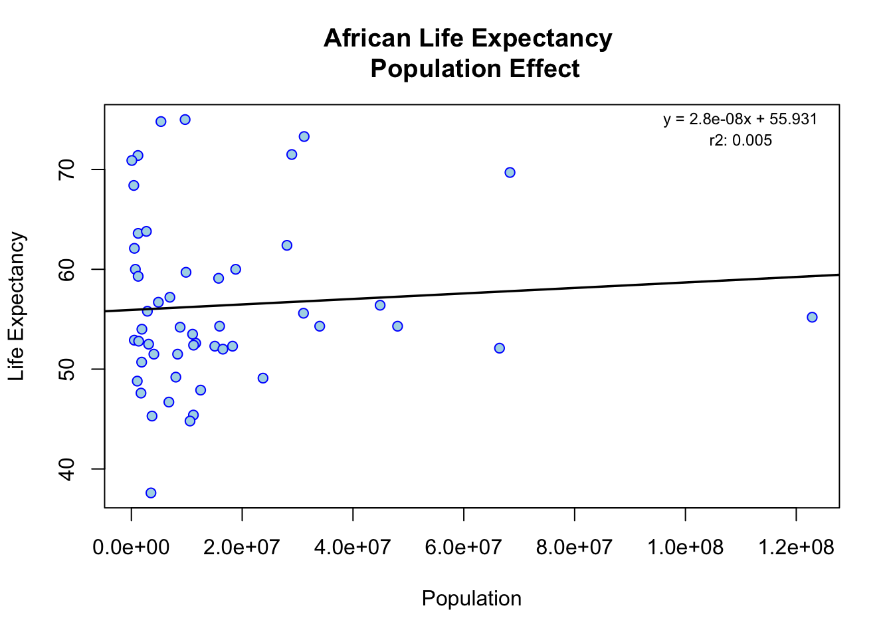
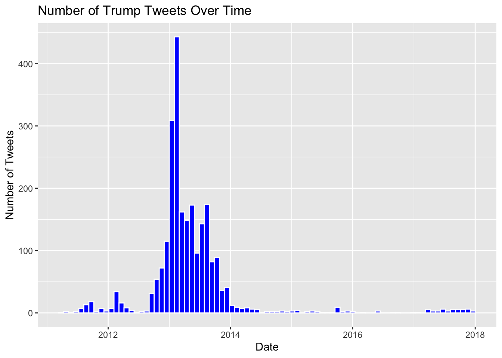
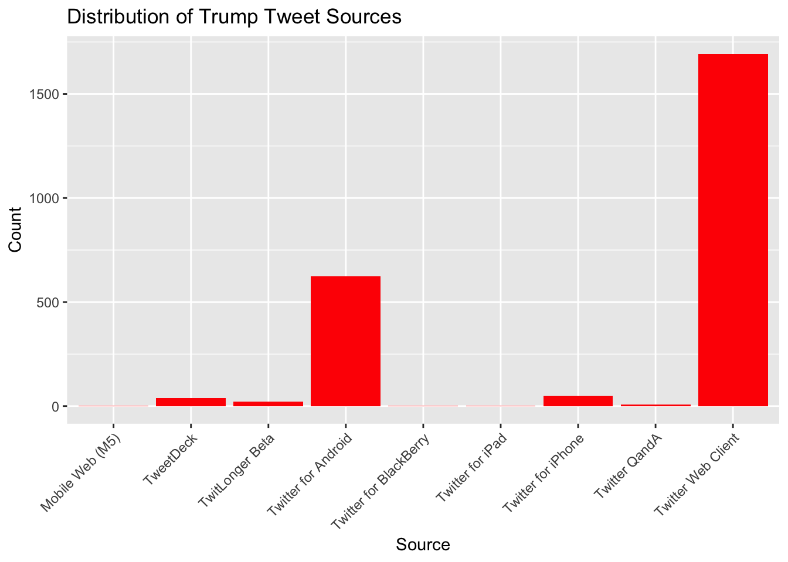

library(dslabs) # to import dataset
library(tidyverse) # data aggregation
library(dplyr) # data aggregation?
data(gapminder)R Coding Exercise
Loading and Checking Data
Import libraries
Help Function
help("gapminder")Data Structure Overview
str(gapminder)'data.frame': 10545 obs. of 9 variables:
$ country : Factor w/ 185 levels "Albania","Algeria",..: 1 2 3 4 5 6 7 8 9 10 ...
$ year : int 1960 1960 1960 1960 1960 1960 1960 1960 1960 1960 ...
$ infant_mortality: num 115.4 148.2 208 NA 59.9 ...
$ life_expectancy : num 62.9 47.5 36 63 65.4 ...
$ fertility : num 6.19 7.65 7.32 4.43 3.11 4.55 4.82 3.45 2.7 5.57 ...
$ population : num 1636054 11124892 5270844 54681 20619075 ...
$ gdp : num NA 1.38e+10 NA NA 1.08e+11 ...
$ continent : Factor w/ 5 levels "Africa","Americas",..: 4 1 1 2 2 3 2 5 4 3 ...
$ region : Factor w/ 22 levels "Australia and New Zealand",..: 19 11 10 2 15 21 2 1 22 21 ...Data Summary
summary(gapminder) country year infant_mortality life_expectancy
Albania : 57 Min. :1960 Min. : 1.50 Min. :13.20
Algeria : 57 1st Qu.:1974 1st Qu.: 16.00 1st Qu.:57.50
Angola : 57 Median :1988 Median : 41.50 Median :67.54
Antigua and Barbuda: 57 Mean :1988 Mean : 55.31 Mean :64.81
Argentina : 57 3rd Qu.:2002 3rd Qu.: 85.10 3rd Qu.:73.00
Armenia : 57 Max. :2016 Max. :276.90 Max. :83.90
(Other) :10203 NA's :1453
fertility population gdp continent
Min. :0.840 Min. :3.124e+04 Min. :4.040e+07 Africa :2907
1st Qu.:2.200 1st Qu.:1.333e+06 1st Qu.:1.846e+09 Americas:2052
Median :3.750 Median :5.009e+06 Median :7.794e+09 Asia :2679
Mean :4.084 Mean :2.701e+07 Mean :1.480e+11 Europe :2223
3rd Qu.:6.000 3rd Qu.:1.523e+07 3rd Qu.:5.540e+10 Oceania : 684
Max. :9.220 Max. :1.376e+09 Max. :1.174e+13
NA's :187 NA's :185 NA's :2972
region
Western Asia :1026
Eastern Africa : 912
Western Africa : 912
Caribbean : 741
South America : 684
Southern Europe: 684
(Other) :5586 Class Functions - Object Determination
class(gapminder)[1] "data.frame"Processing Data
Assign only African countries to a new object/variable.
africadata = filter(gapminder, continent == 'Africa')
head(africadata) country year infant_mortality life_expectancy fertility population
1 Algeria 1960 148.2 47.50 7.65 11124892
2 Angola 1960 208.0 35.98 7.32 5270844
3 Benin 1960 186.9 38.29 6.28 2431620
4 Botswana 1960 115.5 50.34 6.62 524029
5 Burkina Faso 1960 161.3 35.21 6.29 4829291
6 Burundi 1960 145.1 40.58 6.95 2786740
gdp continent region
1 13828152297 Africa Northern Africa
2 NA Africa Middle Africa
3 621797131 Africa Western Africa
4 124460933 Africa Southern Africa
5 596612183 Africa Western Africa
6 341126765 Africa Eastern AfricaAfrica Data Structure Overview
str(africadata)'data.frame': 2907 obs. of 9 variables:
$ country : Factor w/ 185 levels "Albania","Algeria",..: 2 3 18 22 26 27 29 31 32 33 ...
$ year : int 1960 1960 1960 1960 1960 1960 1960 1960 1960 1960 ...
$ infant_mortality: num 148 208 187 116 161 ...
$ life_expectancy : num 47.5 36 38.3 50.3 35.2 ...
$ fertility : num 7.65 7.32 6.28 6.62 6.29 6.95 5.65 6.89 5.84 6.25 ...
$ population : num 11124892 5270844 2431620 524029 4829291 ...
$ gdp : num 1.38e+10 NA 6.22e+08 1.24e+08 5.97e+08 ...
$ continent : Factor w/ 5 levels "Africa","Americas",..: 1 1 1 1 1 1 1 1 1 1 ...
$ region : Factor w/ 22 levels "Australia and New Zealand",..: 11 10 20 17 20 5 10 20 10 10 ...Africa Summary
summary(africadata) country year infant_mortality life_expectancy
Algeria : 57 Min. :1960 Min. : 11.40 Min. :13.20
Angola : 57 1st Qu.:1974 1st Qu.: 62.20 1st Qu.:48.23
Benin : 57 Median :1988 Median : 93.40 Median :53.98
Botswana : 57 Mean :1988 Mean : 95.12 Mean :54.38
Burkina Faso: 57 3rd Qu.:2002 3rd Qu.:124.70 3rd Qu.:60.10
Burundi : 57 Max. :2016 Max. :237.40 Max. :77.60
(Other) :2565 NA's :226
fertility population gdp continent
Min. :1.500 Min. : 41538 Min. :4.659e+07 Africa :2907
1st Qu.:5.160 1st Qu.: 1605232 1st Qu.:8.373e+08 Americas: 0
Median :6.160 Median : 5570982 Median :2.448e+09 Asia : 0
Mean :5.851 Mean : 12235961 Mean :9.346e+09 Europe : 0
3rd Qu.:6.860 3rd Qu.: 13888152 3rd Qu.:6.552e+09 Oceania : 0
Max. :8.450 Max. :182201962 Max. :1.935e+11
NA's :51 NA's :51 NA's :637
region
Eastern Africa :912
Western Africa :912
Middle Africa :456
Northern Africa :342
Southern Africa :285
Australia and New Zealand: 0
(Other) : 0 African Infant Mortality Object
infant_survival_rate = africadata %>%
select(infant_mortality, life_expectancy)
head(infant_survival_rate) infant_mortality life_expectancy
1 148.2 47.50
2 208.0 35.98
3 186.9 38.29
4 115.5 50.34
5 161.3 35.21
6 145.1 40.58African Infant Mortality Data Structure
str(infant_survival_rate)'data.frame': 2907 obs. of 2 variables:
$ infant_mortality: num 148 208 187 116 161 ...
$ life_expectancy : num 47.5 36 38.3 50.3 35.2 ...African Infant Mortality Data Summary
summary(infant_survival_rate) infant_mortality life_expectancy
Min. : 11.40 Min. :13.20
1st Qu.: 62.20 1st Qu.:48.23
Median : 93.40 Median :53.98
Mean : 95.12 Mean :54.38
3rd Qu.:124.70 3rd Qu.:60.10
Max. :237.40 Max. :77.60
NA's :226 African Mortality Object
african_mortality = africadata %>%
select(population, life_expectancy)
head(african_mortality) population life_expectancy
1 11124892 47.50
2 5270844 35.98
3 2431620 38.29
4 524029 50.34
5 4829291 35.21
6 2786740 40.58African Mortality Data Structure
str(african_mortality)'data.frame': 2907 obs. of 2 variables:
$ population : num 11124892 5270844 2431620 524029 4829291 ...
$ life_expectancy: num 47.5 36 38.3 50.3 35.2 ...African Mortality Data Summary
summary(african_mortality) population life_expectancy
Min. : 41538 Min. :13.20
1st Qu.: 1605232 1st Qu.:48.23
Median : 5570982 Median :53.98
Mean : 12235961 Mean :54.38
3rd Qu.: 13888152 3rd Qu.:60.10
Max. :182201962 Max. :77.60
NA's :51 Plotting
Life Expectancy as a Function of Infant Mortality
regression = lm(infant_survival_rate$life_expectancy ~ infant_survival_rate$infant_mortality)
rsq <- function(x, y) summary(lm(infant_survival_rate$life_expectancy ~ infant_survival_rate$infant_mortality))$r.squared
r_square = round(rsq(obs, mod), 3)
# summary(regression)$coefficients - keep to sanity check
coeff = round(summary(regression)$coefficients[2],3)
y_int = round(summary(regression)$coefficients[1],3)
plot(
infant_survival_rate$infant_mortality,
infant_survival_rate$life_expectancy,
main='African Life Expectancy \n Infant Mortality Effect',
xlab='Infant Mortality',
ylab='Life Expectancy',
col='blue',
bg='lightblue',
pch = 21,
)
# rsq_str = expression(paste("r"^"2:"))
rsq_str = "r2: "
text(175, 75, paste0('y = ', coeff, 'x + ', y_int), cex=0.75)
text(170, 70, paste0(rsq_str, r_square), cex=0.75)
abline(
lm(
infant_survival_rate$life_expectancy ~ infant_survival_rate$infant_mortality),
col='black',
lwd=1.75)
Life Expectancy as a Function of Population
regression = lm(african_mortality$life_expectancy ~ african_mortality$population)
rsq <- function(x, y) summary(lm(african_mortality$life_expectancy ~ african_mortality$population))$r.squared
r_square = round(rsq(obs, mod), 3)
# summary(regression)$coefficients - keep to sanity check
coeff = round(summary(regression)$coefficients[2],9)
y_int = round(summary(regression)$coefficients[1],3)
plot(
african_mortality$population,
african_mortality$life_expectancy,
main='African Life Expectancy \n Population Effect',
xlab='Population',
ylab='Life Expectancy',
col='blue',
bg='lightblue',
pch = 21,
)
# rsq_str = expression(paste("r"^"2:"))
rsq_str = "r2: "
text(155000000, 75, paste0('y = ', coeff, 'x + ', y_int), cex=0.75)
text(155000000, 70, paste0(rsq_str, r_square), cex=0.75)
abline(
lm(
african_mortality$life_expectancy ~ african_mortality$population),
col='black',
lwd=1.75)
** STILL NEED TO ANSWER QUESTION AT THE END OF THE PLOTTING SECTION**
More Data Processing
Missing Years For Infant Mortality Data
miss_inf_mort_rows = africadata %>%
filter(is.na(infant_mortality))
head(miss_inf_mort_rows) country year infant_mortality life_expectancy fertility population
1 Cape Verde 1960 NA 50.12 6.89 202316
2 Chad 1960 NA 40.95 6.25 3002596
3 Djibouti 1960 NA 45.77 6.46 83636
4 Equatorial Guinea 1960 NA 37.69 5.51 252115
5 Eritrea 1960 NA 39.03 6.90 1407631
6 Gabon 1960 NA 38.83 4.38 499189
gdp continent region
1 NA Africa Western Africa
2 750173439 Africa Middle Africa
3 NA Africa Eastern Africa
4 NA Africa Middle Africa
5 NA Africa Eastern Africa
6 887289809 Africa Middle AfricaPerform Year Groupby to Identify Distinct Missing Years
miss_inf_mort_yrs = miss_inf_mort_rows %>%
group_by(year) %>%
count(infant_mortality)
miss_inf_mort_yrs# A tibble: 23 × 3
# Groups: year [23]
year infant_mortality n
<int> <dbl> <int>
1 1960 NA 10
2 1961 NA 17
3 1962 NA 16
4 1963 NA 16
5 1964 NA 15
6 1965 NA 14
7 1966 NA 13
8 1967 NA 11
9 1968 NA 11
10 1969 NA 7
# ℹ 13 more rowsExtract Only Year 2000 From africadata As New Object
africadata2000 = filter(africadata, year == 2000)
africadata2000 country year infant_mortality life_expectancy fertility
1 Algeria 2000 33.9 73.3 2.51
2 Angola 2000 128.3 52.3 6.84
3 Benin 2000 89.3 57.2 5.98
4 Botswana 2000 52.4 47.6 3.41
5 Burkina Faso 2000 96.2 52.6 6.59
6 Burundi 2000 93.4 46.7 7.06
7 Cameroon 2000 91.9 54.3 5.62
8 Cape Verde 2000 29.1 68.4 3.70
9 Central African Republic 2000 113.6 45.3 5.45
10 Chad 2000 105.7 51.5 7.35
11 Comoros 2000 72.7 62.1 5.32
12 Congo, Dem. Rep. 2000 107.4 54.3 7.09
13 Congo, Rep. 2000 76.6 52.5 5.13
14 Cote d'Ivoire 2000 99.5 52.0 5.38
15 Djibouti 2000 79.7 60.0 4.47
16 Egypt 2000 37.0 69.7 3.31
17 Equatorial Guinea 2000 104.8 52.9 5.77
18 Eritrea 2000 58.3 37.6 5.94
19 Ethiopia 2000 89.5 52.1 6.53
20 Gabon 2000 55.6 59.3 4.60
21 Gambia 2000 63.3 63.6 5.92
22 Ghana 2000 64.9 60.0 4.67
23 Guinea 2000 103.1 54.2 5.94
24 Guinea-Bissau 2000 106.9 52.8 5.85
25 Kenya 2000 66.5 55.6 5.01
26 Lesotho 2000 84.1 50.7 4.09
27 Liberia 2000 123.0 55.8 5.88
28 Libya 2000 24.2 74.8 3.05
29 Madagascar 2000 69.7 59.1 5.55
30 Malawi 2000 103.5 45.4 6.25
31 Mali 2000 116.0 53.5 6.84
32 Mauritania 2000 76.2 63.8 5.38
33 Mauritius 2000 16.4 71.4 1.99
34 Morocco 2000 42.2 71.5 2.70
35 Mozambique 2000 115.0 52.3 5.78
36 Namibia 2000 49.4 54.0 4.03
37 Niger 2000 101.1 52.4 7.73
38 Nigeria 2000 112.0 55.2 6.10
39 Rwanda 2000 109.2 49.2 5.90
40 Senegal 2000 68.5 59.7 5.56
41 Seychelles 2000 12.3 70.9 2.15
42 Sierra Leone 2000 143.3 51.5 5.92
43 South Africa 2000 54.0 56.4 2.87
44 Sudan 2000 67.8 62.4 5.44
45 Swaziland 2000 84.0 48.8 4.21
46 Tanzania 2000 80.3 54.3 5.69
47 Togo 2000 76.2 56.7 5.29
48 Tunisia 2000 26.3 75.0 2.11
49 Uganda 2000 90.0 49.1 6.87
50 Zambia 2000 97.6 44.8 6.07
51 Zimbabwe 2000 63.5 47.9 4.07
population gdp continent region
1 31183658 54790058957 Africa Northern Africa
2 15058638 9129180361 Africa Middle Africa
3 6949366 2254838685 Africa Western Africa
4 1736579 5632391130 Africa Southern Africa
5 11607944 2610945549 Africa Western Africa
6 6767073 835334807 Africa Eastern Africa
7 15927713 10075040331 Africa Middle Africa
8 438737 539227053 Africa Western Africa
9 3726048 959413051 Africa Middle Africa
10 8343321 1385050964 Africa Middle Africa
11 547696 201900820 Africa Eastern Africa
12 48048664 4305797176 Africa Middle Africa
13 3109269 3219893817 Africa Middle Africa
14 16517948 10417006096 Africa Western Africa
15 722562 551230862 Africa Eastern Africa
16 68334905 99838540997 Africa Northern Africa
17 530896 1254223037 Africa Middle Africa
18 3535156 633600000 Africa Eastern Africa
19 66443603 8179533779 Africa Eastern Africa
20 1231548 5067838984 Africa Middle Africa
21 1228863 786665264 Africa Western Africa
22 18824994 4977488790 Africa Western Africa
23 8799165 3112362568 Africa Western Africa
24 1315455 215455490 Africa Western Africa
25 31065820 12691278914 Africa Eastern Africa
26 1856225 745832990 Africa Southern Africa
27 2891968 529064647 Africa Western Africa
28 5337264 33896600871 Africa Northern Africa
29 15744811 3877575177 Africa Eastern Africa
30 11193230 1743506520 Africa Eastern Africa
31 11046926 2422469641 Africa Western Africa
32 2711421 1293653473 Africa Western Africa
33 1185143 4582562398 Africa Eastern Africa
34 28950553 37020609825 Africa Northern Africa
35 18264536 4248747769 Africa Eastern Africa
36 1897953 3908501441 Africa Southern Africa
37 11224523 1798365123 Africa Western Africa
38 122876723 45983449593 Africa Western Africa
39 8021875 1734921293 Africa Eastern Africa
40 9860578 4691828357 Africa Western Africa
41 81154 614879765 Africa Eastern Africa
42 4060709 635876870 Africa Western Africa
43 44896856 132877648091 Africa Southern Africa
44 28079664 12366140066 Africa Northern Africa
45 1063715 1524452437 Africa Southern Africa
46 33991590 10185786171 Africa Eastern Africa
47 4874735 1294243543 Africa Western Africa
48 9699192 21473261837 Africa Northern Africa
49 23757636 6193246632 Africa Eastern Africa
50 10585220 3237716325 Africa Eastern Africa
51 12499981 6689957610 Africa Eastern Africaafricadata2000 Data Structure
str(africadata2000)'data.frame': 51 obs. of 9 variables:
$ country : Factor w/ 185 levels "Albania","Algeria",..: 2 3 18 22 26 27 29 31 32 33 ...
$ year : int 2000 2000 2000 2000 2000 2000 2000 2000 2000 2000 ...
$ infant_mortality: num 33.9 128.3 89.3 52.4 96.2 ...
$ life_expectancy : num 73.3 52.3 57.2 47.6 52.6 46.7 54.3 68.4 45.3 51.5 ...
$ fertility : num 2.51 6.84 5.98 3.41 6.59 7.06 5.62 3.7 5.45 7.35 ...
$ population : num 31183658 15058638 6949366 1736579 11607944 ...
$ gdp : num 5.48e+10 9.13e+09 2.25e+09 5.63e+09 2.61e+09 ...
$ continent : Factor w/ 5 levels "Africa","Americas",..: 1 1 1 1 1 1 1 1 1 1 ...
$ region : Factor w/ 22 levels "Australia and New Zealand",..: 11 10 20 17 20 5 10 20 10 10 ...africadata2000 Data Summary
summary(africadata2000) country year infant_mortality life_expectancy
Algeria : 1 Min. :2000 Min. : 12.30 Min. :37.60
Angola : 1 1st Qu.:2000 1st Qu.: 60.80 1st Qu.:51.75
Benin : 1 Median :2000 Median : 80.30 Median :54.30
Botswana : 1 Mean :2000 Mean : 78.93 Mean :56.36
Burkina Faso: 1 3rd Qu.:2000 3rd Qu.:103.30 3rd Qu.:60.00
Burundi : 1 Max. :2000 Max. :143.30 Max. :75.00
(Other) :45
fertility population gdp continent
Min. :1.990 Min. : 81154 Min. :2.019e+08 Africa :51
1st Qu.:4.150 1st Qu.: 2304687 1st Qu.:1.274e+09 Americas: 0
Median :5.550 Median : 8799165 Median :3.238e+09 Asia : 0
Mean :5.156 Mean : 15659800 Mean :1.155e+10 Europe : 0
3rd Qu.:5.960 3rd Qu.: 17391242 3rd Qu.:8.654e+09 Oceania : 0
Max. :7.730 Max. :122876723 Max. :1.329e+11
region
Eastern Africa :16
Western Africa :16
Middle Africa : 8
Northern Africa : 6
Southern Africa : 5
Australia and New Zealand: 0
(Other) : 0 More Plotting
Create The Same Plots For africadata2000 Object
Filter New Object to Create Graph Datasets (1/2)
african_mortality2000 = africadata2000 %>%
select(population, life_expectancy)
head(african_mortality2000) population life_expectancy
1 31183658 73.3
2 15058638 52.3
3 6949366 57.2
4 1736579 47.6
5 11607944 52.6
6 6767073 46.7Filter New Object to Create Graph Datasets (2/2)
infant_survival_rate2000 = africadata2000 %>%
select(infant_mortality, life_expectancy)
head(african_mortality2000) population life_expectancy
1 31183658 73.3
2 15058638 52.3
3 6949366 57.2
4 1736579 47.6
5 11607944 52.6
6 6767073 46.7Infant Mortality Effect
regression = lm(infant_survival_rate2000$life_expectancy ~ infant_survival_rate2000$infant_mortality)
rsq <- function(x, y) summary(lm(infant_survival_rate2000$life_expectancy ~ infant_survival_rate2000$infant_mortality))$r.squared
r_square = round(rsq(obs, mod), 3)
# summary(regression)$coefficients - keep to sanity check
coeff = round(summary(regression)$coefficients[2],3)
y_int = round(summary(regression)$coefficients[1],3)
plot(
infant_survival_rate2000$infant_mortality,
infant_survival_rate2000$life_expectancy,
main='African Life Expectancy \n Infant Mortality Effect',
xlab='Infant Mortality',
ylab='Life Expectancy',
col='blue',
bg='lightblue',
pch = 21,
)
# rsq_str = expression(paste("r"^"2:"))
rsq_str = "r2: "
text(130, 75, paste0('y = ', coeff, 'x + ', y_int), cex=0.75)
text(130, 73, paste0(rsq_str, r_square), cex=0.75)
abline(
lm(
infant_survival_rate2000$life_expectancy ~ infant_survival_rate2000$infant_mortality),
col='black',
lwd=1.75)
Population Effect
regression = lm(african_mortality2000$life_expectancy ~ african_mortality2000$population)
rsq <- function(x, y) summary(lm(african_mortality2000$life_expectancy ~ african_mortality2000$population))$r.squared
r_square = round(rsq(obs, mod), 3)
# summary(regression)$coefficients - keep to sanity check
coeff = round(summary(regression)$coefficients[2],9)
y_int = round(summary(regression)$coefficients[1],3)
plot(
african_mortality2000$population,
african_mortality2000$life_expectancy,
main='African Life Expectancy \n Population Effect',
xlab='Population',
ylab='Life Expectancy',
col='blue',
bg='lightblue',
pch = 21,
)
# rsq_str = expression(paste("r"^"2:"))
rsq_str = "r2: "
text(110000000, 75, paste0('y = ', coeff, 'x + ', y_int), cex=0.75)
text(110000000, 73, paste0(rsq_str, r_square), cex=0.75)
abline(
lm(
african_mortality2000$life_expectancy ~ african_mortality2000$population),
col='black',
lwd=1.75)
Simple Model Fits
Fit Life Expectancy to Infant Mortality
fit1 = lm(infant_survival_rate2000$life_expectancy ~ infant_survival_rate2000$infant_mortality)
summary(fit1)
Call:
lm(formula = infant_survival_rate2000$life_expectancy ~ infant_survival_rate2000$infant_mortality)
Residuals:
Min 1Q Median 3Q Max
-22.6651 -3.7087 0.9914 4.0408 8.6817
Coefficients:
Estimate Std. Error t value Pr(>|t|)
(Intercept) 71.29331 2.42611 29.386 < 2e-16
infant_survival_rate2000$infant_mortality -0.18916 0.02869 -6.594 2.83e-08
(Intercept) ***
infant_survival_rate2000$infant_mortality ***
---
Signif. codes: 0 '***' 0.001 '**' 0.01 '*' 0.05 '.' 0.1 ' ' 1
Residual standard error: 6.221 on 49 degrees of freedom
Multiple R-squared: 0.4701, Adjusted R-squared: 0.4593
F-statistic: 43.48 on 1 and 49 DF, p-value: 2.826e-08Fit Life Expectancy to Population
fit2 = lm(african_mortality2000$life_expectancy ~ african_mortality2000$population)
summary(fit2)
Call:
lm(formula = african_mortality2000$life_expectancy ~ african_mortality2000$population)
Residuals:
Min 1Q Median 3Q Max
-18.429 -4.602 -2.568 3.800 18.802
Coefficients:
Estimate Std. Error t value Pr(>|t|)
(Intercept) 5.593e+01 1.468e+00 38.097 <2e-16 ***
african_mortality2000$population 2.756e-08 5.459e-08 0.505 0.616
---
Signif. codes: 0 '***' 0.001 '**' 0.01 '*' 0.05 '.' 0.1 ' ' 1
Residual standard error: 8.524 on 49 degrees of freedom
Multiple R-squared: 0.005176, Adjusted R-squared: -0.01513
F-statistic: 0.2549 on 1 and 49 DF, p-value: 0.6159Conclusion
Our fit1 model’s (i.e. fit life expectancy to infant mortality) independent variable has a p-value less than the significance level, so we reject the null hypothesis and conclude that infant mortality has a significant effect on life expectancy. For every infant death, life expectancy reduces by 0.18916 Our fit2 model’s (i.e. fit life expectancy to population) independent variable has a p-value greater than the significance level, so we do not reject the null hypothesis and conclude that population does not have a significant effect on life expectancy.
This section contributed by SETH HARRIS.
Loading and Exploring the Dataset:
Loaded the
dslabspackage and thetrump_tweetsdataset.Explored the dataset using
str(),summary(), andhead()functions.
# Load the dslabs package
library(dslabs)
# Load the trump_tweets dataset
data("trump_tweets")
# Explore the dataset
str(trump_tweets)'data.frame': 20761 obs. of 8 variables:
$ source : chr "Twitter Web Client" "Twitter Web Client" "Twitter Web Client" "Twitter Web Client" ...
$ id_str : chr "6971079756" "6312794445" "6090839867" "5775731054" ...
$ text : chr "From Donald Trump: Wishing everyone a wonderful holiday & a happy, healthy, prosperous New Year. Let’s think li"| __truncated__ "Trump International Tower in Chicago ranked 6th tallest building in world by Council on Tall Buildings & Urban "| __truncated__ "Wishing you and yours a very Happy and Bountiful Thanksgiving!" "Donald Trump Partners with TV1 on New Reality Series Entitled, Omarosa's Ultimate Merger: http://tinyurl.com/yk5m3lc" ...
$ created_at : POSIXct, format: "2009-12-23 12:38:18" "2009-12-03 14:39:09" ...
$ retweet_count : int 28 33 13 5 7 4 2 4 1 22 ...
$ in_reply_to_user_id_str: chr NA NA NA NA ...
$ favorite_count : int 12 6 11 3 6 5 2 10 4 30 ...
$ is_retweet : logi FALSE FALSE FALSE FALSE FALSE FALSE ...summary(trump_tweets) source id_str text
Length:20761 Length:20761 Length:20761
Class :character Class :character Class :character
Mode :character Mode :character Mode :character
created_at retweet_count in_reply_to_user_id_str
Min. :2009-05-04 13:54:25.00 Min. : 0 Length:20761
1st Qu.:2013-02-13 14:15:54.00 1st Qu.: 34 Class :character
Median :2014-05-03 07:07:38.00 Median : 264 Mode :character
Mean :2014-08-02 16:29:32.18 Mean : 3854
3rd Qu.:2016-02-13 20:17:51.00 3rd Qu.: 3267
Max. :2018-01-01 08:37:52.00 Max. :369530
favorite_count is_retweet
Min. : 0 Mode :logical
1st Qu.: 22 FALSE:20761
Median : 173
Mean : 13591
3rd Qu.: 8573
Max. :633253 head(trump_tweets) source id_str
1 Twitter Web Client 6971079756
2 Twitter Web Client 6312794445
3 Twitter Web Client 6090839867
4 Twitter Web Client 5775731054
5 Twitter Web Client 5364614040
6 Twitter Web Client 5203117820
text
1 From Donald Trump: Wishing everyone a wonderful holiday & a happy, healthy, prosperous New Year. Let’s think like champions in 2010!
2 Trump International Tower in Chicago ranked 6th tallest building in world by Council on Tall Buildings & Urban Habitat http://bit.ly/sqvQq
3 Wishing you and yours a very Happy and Bountiful Thanksgiving!
4 Donald Trump Partners with TV1 on New Reality Series Entitled, Omarosa's Ultimate Merger: http://tinyurl.com/yk5m3lc
5 --Work has begun, ahead of schedule, to build the greatest golf course in history: Trump International – Scotland.
6 --From Donald Trump: "Ivanka and Jared’s wedding was spectacular, and they make a beautiful couple. I’m a very proud father."
created_at retweet_count in_reply_to_user_id_str favorite_count
1 2009-12-23 12:38:18 28 <NA> 12
2 2009-12-03 14:39:09 33 <NA> 6
3 2009-11-26 14:55:38 13 <NA> 11
4 2009-11-16 16:06:10 5 <NA> 3
5 2009-11-02 09:57:56 7 <NA> 6
6 2009-10-27 10:31:48 4 <NA> 5
is_retweet
1 FALSE
2 FALSE
3 FALSE
4 FALSE
5 FALSE
6 FALSEAfter reviewing the data sets available, I selected the “trump_tweets” dataset for further exploration. This data set contains all tweets from Donald Trump’s Twitter account from 2009 to 2017. Additionally, the results of a sentiment analysis, conducted on tweets from the campaign period (2015-06-17 to 2016-11-08), are included in sentiment_counts. The goal of exploring the trump_tweets dataset is to analyze and understand patterns and trends in the tweets made by former U.S. President Donald Trump. This analysis can provide insights into the topics he tweeted about, the frequency and timing of his tweets, the sentiment expressed in his tweets, and how his tweeting behavior changed over time. By examining this dataset, we can gain a better understanding of his communication strategy on social media and its potential impact on public opinion and political discourse.
Data Cleaning and Processing:
Removed rows with missing values using
na.omit().Converted the
created_atcolumn to Date format.
# Do any processing/cleaning (e.g., removing rows with missing values)
trump_tweets_clean <- na.omit(trump_tweets) # Remove rows with missing values
# Convert the date column to Date format
trump_tweets_clean$created_at <- as.Date(trump_tweets_clean$created_at)Exploratory Data Analysis:
- Created a histogram plot to visualize the number of tweets over time.
# Make a few exploratory figures
library(ggplot2)
# Plot the number of tweets over time
ggplot(trump_tweets_clean, aes(x = created_at)) +
geom_histogram(binwidth = 30, fill = "blue", color = "white") +
labs(title = "Number of Trump Tweets Over Time", x = "Date", y = "Number of Tweets")
# Finding: This plot shows the distribution of Trump's tweets over time. We can see spikes in activity around certain periods, indicating increased tweeting during those times.From the plot “Number of Trump Tweets Over Time,” we observe a few key trends:
- Peak Activity: There is a significant peak in tweet activity around the year 2013, indicating a period when Trump was highly active on Twitter.
- Fluctuations: There are notable fluctuations in tweet frequency over time, with periods of high and low activity.
- Drop in Activity: After 2014, there is a marked decline in tweet frequency, with very few tweets observed after 2016.
These trends can be indicative of changes in Trump’s social media strategy or other external factors influencing his tweet activity.
Exploratory Data Analysis:
- Created a bar plot to visualize the distribution of tweet sources.
# Plot the distribution of tweet sources
ggplot(trump_tweets_clean, aes(x = source)) +
geom_bar(fill = "red") +
labs(title = "Distribution of Trump Tweet Sources", x = "Source", y = "Count") +
theme(axis.text.x = element_text(angle = 45, hjust = 1))
# Finding: This plot shows the different sources from which Trump tweeted. It gives us an idea of the platforms he used most frequently for tweeting.Based on the plot above “Distribution of Trump Tweet Sources,” we can observe the following:
- Twitter Web Client is the most frequently used source, with a count exceeding 1500 tweets.
- Twitter for Android is the second most common source, with around 500 tweets.
- Other sources like TweetDeck, TwitLonger Beta, and Twitter for iPhone have a much lower count.
- The plot also includes less frequently used sources like Mobile Web (M5), Twitter for BlackBerry, Twitter for iPad, and Twitter QandA.
This distribution indicates that the majority of tweets were posted using the Twitter Web Client and Android platforms.
Statistical Modeling:
Performed linear regression to analyze the relationship between the number of retweets and favorites.
Performed linear regression to analyze the relationship between tweet length and the number of favorites.
# Run some simple statistical models
# Model 1: Linear regression of the number of favorites based on the number of retweets
model1 <- lm(favorite_count ~ retweet_count, data = trump_tweets_clean)
summary(model1)
Call:
lm(formula = favorite_count ~ retweet_count, data = trump_tweets_clean)
Residuals:
Min 1Q Median 3Q Max
-119669 -136 -131 -128 31975
Coefficients:
Estimate Std. Error t value Pr(>|t|)
(Intercept) 128.44252 68.56449 1.873 0.0611 .
retweet_count 3.38915 0.03283 103.220 <2e-16 ***
---
Signif. codes: 0 '***' 0.001 '**' 0.01 '*' 0.05 '.' 0.1 ' ' 1
Residual standard error: 3361 on 2440 degrees of freedom
Multiple R-squared: 0.8137, Adjusted R-squared: 0.8136
F-statistic: 1.065e+04 on 1 and 2440 DF, p-value: < 2.2e-16# Finding: This model examines the relationship between the number of retweets and the number of favorites. The summary provides information on the strength and significance of this relationship.
# Model 2: Linear regression of the number of favorites based on the length of the tweet
trump_tweets_clean$text_length <- nchar(trump_tweets_clean$text)
model2 <- lm(favorite_count ~ text_length, data = trump_tweets_clean)
summary(model2)
Call:
lm(formula = favorite_count ~ text_length, data = trump_tweets_clean)
Residuals:
Min 1Q Median 3Q Max
-6007 -1475 -73 468 100932
Coefficients:
Estimate Std. Error t value Pr(>|t|)
(Intercept) -1763.260 256.052 -6.886 7.26e-12 ***
text_length 54.012 4.001 13.500 < 2e-16 ***
---
Signif. codes: 0 '***' 0.001 '**' 0.01 '*' 0.05 '.' 0.1 ' ' 1
Residual standard error: 7511 on 2440 degrees of freedom
Multiple R-squared: 0.0695, Adjusted R-squared: 0.06912
F-statistic: 182.2 on 1 and 2440 DF, p-value: < 2.2e-16# Finding: This model examines the relationship between the length of a tweet and the number of favorites. The summary provides insights into whether longer tweets tend to receive more favorites.
# Report the results from the models
cat("Model 1: Linear regression of the number of favorites based on the number of retweets\n")Model 1: Linear regression of the number of favorites based on the number of retweetsprint(summary(model1))
Call:
lm(formula = favorite_count ~ retweet_count, data = trump_tweets_clean)
Residuals:
Min 1Q Median 3Q Max
-119669 -136 -131 -128 31975
Coefficients:
Estimate Std. Error t value Pr(>|t|)
(Intercept) 128.44252 68.56449 1.873 0.0611 .
retweet_count 3.38915 0.03283 103.220 <2e-16 ***
---
Signif. codes: 0 '***' 0.001 '**' 0.01 '*' 0.05 '.' 0.1 ' ' 1
Residual standard error: 3361 on 2440 degrees of freedom
Multiple R-squared: 0.8137, Adjusted R-squared: 0.8136
F-statistic: 1.065e+04 on 1 and 2440 DF, p-value: < 2.2e-16cat("Model 2: Linear regression of the number of favorites based on the length of the tweet\n")Model 2: Linear regression of the number of favorites based on the length of the tweetprint(summary(model2))
Call:
lm(formula = favorite_count ~ text_length, data = trump_tweets_clean)
Residuals:
Min 1Q Median 3Q Max
-6007 -1475 -73 468 100932
Coefficients:
Estimate Std. Error t value Pr(>|t|)
(Intercept) -1763.260 256.052 -6.886 7.26e-12 ***
text_length 54.012 4.001 13.500 < 2e-16 ***
---
Signif. codes: 0 '***' 0.001 '**' 0.01 '*' 0.05 '.' 0.1 ' ' 1
Residual standard error: 7511 on 2440 degrees of freedom
Multiple R-squared: 0.0695, Adjusted R-squared: 0.06912
F-statistic: 182.2 on 1 and 2440 DF, p-value: < 2.2e-16Model 1: Linear regression of the number of favorites based on the number of retweets
Summary: - Intercept: 128.44 (p = 0.0611) - Slope (retweet_count): 3.39 (p < 2e-16)
Findings: - Strong positive relationship between retweets and favorites. - High R-squared value (0.8137), indicating 81.37% of the variability in favorites is explained by retweets. - Significant model (p-value < 2.2e-16).
Model 2: Linear regression of the number of favorites based on the length of the tweet
Summary: - Intercept: -1763.26 (p < 2e-16) - Slope (text_length): 54.01 (p < 2e-16)
Findings: - Positive relationship between tweet length and favorites. - Low R-squared value (0.0695), indicating 6.95% of the variability in favorites is explained by tweet length. - Significant model (p-value < 2.2e-16).
Conclusion
The analysis of the Trump Tweets dataset reveals several interesting insights:
Tweet Frequency Over Time: The histogram plot shows a significant increase in the number of tweets around mid-2013, with a peak and subsequent decline by early 2014. This trend may correlate with specific events or increased activity during that period.
Tweet Sources: The majority of Trump’s tweets were sent from the “Twitter Web Client,” followed by “Twitter for Android.” This suggests a preference for these platforms.
Statistical Models:
- Model 1: There is a strong positive relationship between the number of retweets and the number of favorites, with a high R-squared value of 0.8137. This indicates that retweets are a strong predictor of favorites.
- Model 2: The length of the tweet also positively correlates with the number of favorites but to a much lesser extent, with an R-squared value of 0.0695. While statistically significant, tweet length explains much less variability in favorites compared to retweets.
In summary, the number of retweets is a strong indicator of the popularity of Trump’s tweets, significantly more so than the length of the tweet. This analysis provides insights into the factors influencing the engagement levels of tweets from this dataset.
Comments on Findings:
These findings suggest that while both retweets and tweet length can influence the number of favorites, retweets are a much stronger predictor.
Reporting Findings:
By following these steps, we were able to gain insights into the patterns and predictors of tweet engagement in the Trump_Tweets dataset.